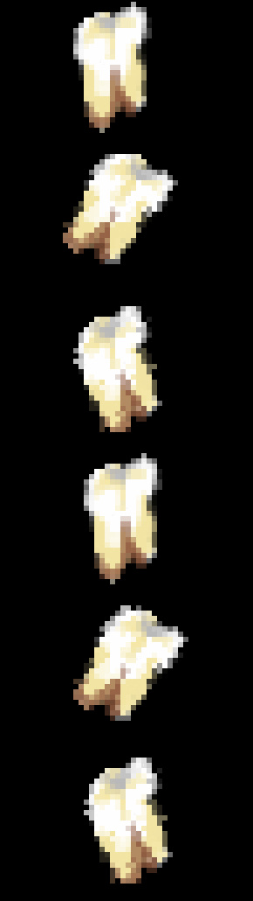
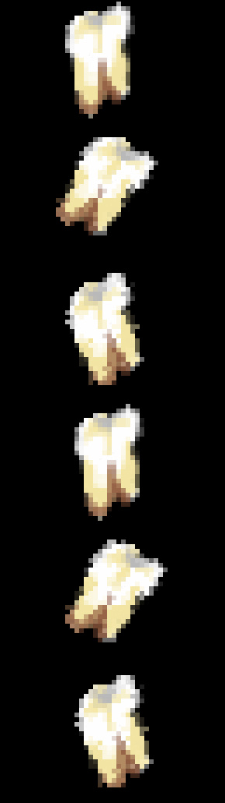

CARIADON DANNEDD, YN CODI
O, edrychwch ar y dannedd mân hyn. Mae perlau ifori wedi'u gwasgaru am ymyl gwely o sglein pinc. Blaenddannedd canolog yn disgleirio, gan ddangos eu lle fel y pâr mwyaf nodedig. Fodd bynnag, nid yw hynny'n tynnu oddi ar y dannedd sy'n llechu ac yn cuddio o fewn ceudwll y deintgig. Er efallai na fyddant yn disgleirio, nac yn disgleirio mor llachar â'r blaenddannedd neu'r caninau, mae'r cilddannedd yr un mor arwyddocaol, gan roi cryfder cnoi i bawb. Mae'n drueni pan fydd y traean yn gwacáu'r geg. Mae'n drueni pan fydd dannedd babanod yn cwympo allan. Felly prithee, os yw eich calon yn dymuno, cysylltwch â SAFLERCASGLWR@HOTMAIL.COM am gyfle i roi eich dannedd i arbenigwr gofalgar sy’n caru dannedd…
DIPTERA ANHYGOEL
Croeso i wlad y pryfed! Sylwch ar yr adenydd mor llyfn ag y gallwch fod. Arsylwch y llygaid, y llygaid cyfansawdd, gan edrych cyn belled ag y gallwn weld. Cyrff sgleiniog, sgleiniog. Onid ydyn nhw'n epig? Maen nhw'n gallu hedfan! Dros 125,000 o rywogaethau pryfed, yr hyn y mae'r byd yn ei gynnig. Rhaid inni leoli mwy. Mae pob cenllysg y brenin hedfan!
Bydd y creaduriaid bach hyn yn cymryd drosodd ein bywydau, dim ond aros. Byddwch chi'n un â'r pryfed yn y pen draw, ymhen amser…


Mae fy nghariad at bryfed yn rhagori ar y llawenydd a deimlaf tuag at unrhyw organeb fyw arall (Hepgor fy hun, wrth gwrs). Pan fyddaf yn unben i chi, byddaf yn trawsyrru'n bryf ac yn eich trin i gyd i wneud yr un peth. Gallwn hedfan, bydd ein cystadleuwyr yn crynu. Bydd ein poblogaeth yn ffynnu. Mae pryfed benyw yn gallu cynhyrchu cannoedd o gnats bach yn ystod eu hoes. Delweddu sut y byddem ni fel bodau dynol yn byw gyda galluoedd mor berffaith. Mae adenydd hedfan yn curo ar 200 cylch yr eiliad. Byddai hynny ei hun yn gwella cludiant dynol yn sylweddol. Bydd bywyd yn llawer mwy cynaliadwy ar ôl i ni drawsnewid.


MYTHOLEG CYMRU
UNWAITH AR ÔL, ROEDD BRENIN CEltaidd, WEDI'I ENW GYDA VORTIGERN, OEDD MEWN ANGEN SYRTHYROL I ADEILADU CASTELL RHYFEDD AR Y HILLSIDE AR DINAS EMRYS. FODD BYNNAG, NID OEDD Y SEFYDLIADAU YN SEFYDLOG.
DAN HAWLIADAU WEDI EU BROFI, LLEOLWYD LLYN O DAN Y HILL. MAE POBL RHYFEDD CYMRU YN CLODDIO'R TWL I FYNY AC YN DARGANFOD NID UN, Ond DWY DDRAIG YN YMLADD, UN COCH AC UN GWYN. RHODDasant Y DRAGON GYDA CHWRW.
YN Y pen draw ENILLODD Y DDRAIG GOCH, FELLY, HAWLIODD Y CYMRY Y DDRAIG GOCH FEL EU SYMBOL CENEDLAETHOL, SY ' N CYNRYCHIOLI EU CRYFDER A'U Dyfalbarhad YN ERBYN Y SAESNEG MALIWN.
CANLLAWIAU GWEITHDREFN PHLEBOTOMY
Rwy'n dyheu am yr ymrwymiad, ymroddiad fy enaid. Rwy'n rhyddhau fy hun trwy dynnu cymaint â phosibl o'm cnawd a'm gwaed. Nid wyf yn ddim byd ond fy modolaeth amherthnasol, felly byddaf yn dyfalbarhau i ddilyn fy ideoleg. Pan fydd y Meddygon yn fy herwgipio, yn llyffetheirio fy fferau ac yn tynnu fy ngwaed, fe'm cyflyrir i aros mewn cyflwr o sancteiddrwydd pur.
Rydych chi'n cadarnhau manylion y claf, yn palpate eu gwythiennau ac yn cylchu eu braich estynedig gyda defnydd wedi'i lanhau, rydych chi'n tynhau'r nodwydd ac yn tyllu'r croen ar ongl 40º. Rydych chi'n mewnosod y tiwbiau, gan eu llenwi'n gyflym. Rinsiwch a rhyddhau, gwaredwch y deunyddiau. Anfonwch y gwaed yn rhad ac am ddim, ond gadewch y claf mewn poen.
Rwy'n ysgrifennu ag inc, wedi'i staenio â gwaed dial ffug


TREFN Y GWYTHIENNAU GWAED
Gwystl, byddwch yn aros, yn gaeth, dan glo. Yn awr, yn ymarferol, yr hanfod, rhaid echdynnu sudd eich cnawd yn iawn, trwy'r gwythiennau cywir. Mae Gwythïen Ciwbitol Ganolrifol yn ddelfrydol, yna Cephalic, yna Basilic. Byddwch yn ofalus iawn wrth dynnu'r gwaed o'r wythïen fasilig, gan ei fod yn ddwfn iawn o amgylch blaen y fraich.
RHYBUDD, RHYBUDD I DWEUD, GOFALWCH! MAE CELF DARLUNIO GWAED YN GYFAN O UCHEL AC YN Y diwedd YN WELL NAG UNRHYW ARALL AR GYFER CASGLU GWAED. PARCH FY COFFADWRIAETH, FY CYSYLLTIAD GWAED, OHERWYDD MI YW Y CASGLWR, A CHI YW Y THRALL. BYDDAF YN CYMRYD EICH GWAED, YN ANFOESOL, YN ANFOESOL.

CRAININAUTS OF Y CASGLWR
FFILM AM DDIM!!!